<style>
  :root{
    --primary:#1a4332;
    --secondary:#2d5a27;
    --accent:#c5a059;

    --paper:#FBFCFA;
    --paper2:#F4F7F4;
    --ink:#1f2a33;
    --muted:rgba(31,42,51,.72);
    --white:#ffffff;

    --shadow: 0 14px 40px rgba(0,0,0,.10);
    --shadow2: 0 26px 70px rgba(0,0,0,.16);

    --radius:18px;
    --radius2:26px;
    --max:1200px;

    /* ✅ HERO comme Nature.org (hauteur + recadrage propre) */
    --hero-h: clamp(520px, 72vh, 820px);
  }

  *{box-sizing:border-box;margin:0;padding:0}
  body{
    font-family:"Lato",system-ui,-apple-system,Segoe UI,Roboto,Arial,sans-serif;
    color:var(--ink);
    background:
      radial-gradient(1100px 720px at 12% 10%, rgba(94,143,58,.14) 0%, rgba(94,143,58,0) 58%),
      radial-gradient(900px 680px at 92% 18%, rgba(26,67,50,.12) 0%, rgba(26,67,50,0) 55%),
      radial-gradient(900px 700px at 50% 92%, rgba(197,160,89,.12) 0%, rgba(197,160,89,0) 55%),
      linear-gradient(180deg, var(--paper) 0%, #ffffff 100%);
    line-height:1.6;
  }
  h1,h2,h3,h4{font-family:"Playfair Display",serif}
  a{color:inherit;text-decoration:none}
  img{max-width:100%;display:block}

  .container{max-width:var(--max);margin:0 auto;padding:0 22px}
  .section{padding:76px 0}
  .muted{color:var(--muted)}

  /* HERO (cinéma) */
  .hero{
    position:relative;
    width:100%;
    height:var(--hero-h);
    overflow:hidden;
    display:flex;
    align-items:center;
    border-bottom:1px solid rgba(0,0,0,.06);
  }
  .hero__img{
    position:absolute;
    inset:0;
    width:100%;
    height:100%;
    object-fit:cover;
    object-position:center;
    transform:scale(1.02);
  }
  .hero__overlay{
    position:absolute;inset:0;
    background:
      linear-gradient(90deg, rgba(0,0,0,.55) 0%, rgba(0,0,0,.25) 55%, rgba(0,0,0,.10) 100%),
      radial-gradient(900px 600px at 18% 24%, rgba(197,160,89,.18), transparent 60%),
      radial-gradient(900px 600px at 84% 30%, rgba(94,143,58,.16), transparent 60%),
      linear-gradient(180deg, rgba(0,0,0,.10) 0%, rgba(0,0,0,.50) 75%, rgba(0,0,0,.70) 100%);
  }
  .hero__content{
    position:relative;z-index:2;
    width:100%;
    color:#fff;
    text-shadow:0 2px 14px rgba(0,0,0,.28);
    padding: 44px 0;
  }
  .hero__kicker{
    font-weight:900;
    letter-spacing:.18em;
    text-transform:uppercase;
    opacity:.95;
    margin:0 0 10px;
    font-size:.85rem;
  }
  .hero__content h1{
    font-size:clamp(2.4rem, 4.6vw, 4rem);
    letter-spacing:.06em;
    text-transform:uppercase;
    margin:0 0 12px;
  }
  .hero__lead{
    font-size:clamp(1.05rem, 1.4vw, 1.25rem);
    opacity:.95;
    margin:0;
    max-width:980px;
    line-height:1.85;
  }
  .hero__actions{
    display:flex;gap:12px;flex-wrap:wrap;
    margin-top:18px;
  }

  @media (max-width: 640px){
    :root{ --hero-h: clamp(460px, 70vh, 720px); }
    .hero__overlay{
      background:
        linear-gradient(90deg, rgba(0,0,0,.62) 0%, rgba(0,0,0,.35) 65%, rgba(0,0,0,.15) 100%),
        linear-gradient(180deg, rgba(0,0,0,.12) 0%, rgba(0,0,0,.55) 80%, rgba(0,0,0,.70) 100%);
    }
  }

  /* Buttons */
  .btn, .btn-outline{
    display:inline-flex;align-items:center;justify-content:center;gap:10px;
    padding:12px 18px;border-radius:999px;
    font-weight:900;letter-spacing:.08em;text-transform:uppercase;
    transition:.18s ease;font-size:.82rem;white-space:nowrap;
    cursor:pointer;
    user-select:none;
  }
  .btn{
    background:var(--primary);
    color:#fff;
    border:1px solid rgba(0,0,0,.10);
    box-shadow:0 14px 34px rgba(0,0,0,.12);
  }
  .btn:hover{background:var(--secondary);transform:translateY(-1px)}
  .btn:active{transform:translateY(0)}
  .btn-outline{
    background:rgba(255,255,255,.72);
    color:var(--primary);
    border:1px solid rgba(26,67,50,.25);
    box-shadow:0 10px 26px rgba(0,0,0,.08);
    backdrop-filter: blur(8px);
  }
  .btn-outline:hover{border-color:rgba(26,67,50,.45);transform:translateY(-1px)}

  /* Headings */
  .section-head{text-align:center;margin-bottom:34px}
  .section-title{color:rgba(18,24,30,.92);margin:0 0 10px;font-size:clamp(1.9rem,2.8vw,2.6rem)}
  .section-subtitle{color:var(--muted);margin:0;font-size:1.05rem;line-height:1.8}

  /* Soft section */
  .section--soft{
    background:
      radial-gradient(900px 520px at 12% 18%, rgba(26,67,50,.08) 0%, rgba(26,67,50,0) 56%),
      radial-gradient(900px 520px at 88% 30%, rgba(197,160,89,.10) 0%, rgba(197,160,89,0) 58%),
      linear-gradient(180deg, #ffffff 0%, var(--paper2) 100%);
    border-radius:var(--radius2);
    padding:58px 0;
    border:1px solid rgba(0,0,0,.06);
    box-shadow:0 20px 60px rgba(0,0,0,.06);
  }

  .intro{max-width:980px;margin:0 auto}
  .lead{
    font-size:1.08rem;line-height:1.9;color:rgba(31,42,51,.80);
    text-align:justify;margin:0 0 16px;
  }
  .pillars-note{
    font-weight:900;color:rgba(26,67,50,.92);
    text-align:center;margin:10px 0 0;
    letter-spacing:.02em;
  }

  /* Cards */
  .cards-grid{
    display:grid;
    grid-template-columns: repeat(3, minmax(0, 1fr));
    gap:22px;
  }
  .cards-grid--wide{grid-template-columns: repeat(auto-fit, minmax(260px, 1fr))}

  .card{
    background:rgba(255,255,255,.92);
    border-radius:var(--radius);
    overflow:hidden;
    box-shadow:var(--shadow);
    border:1px solid rgba(0,0,0,.08);
    transition:.22s ease;
    transform:translateY(0);
  }
  .card:hover{transform:translateY(-4px);box-shadow:var(--shadow2)}
  .card-img{width:100%;height:240px;object-fit:cover;filter:saturate(1.05) contrast(1.02)}
  .card-img--short{height:210px}
  .card-body{padding:18px 18px 20px}
  .card-body h3{margin:0 0 10px;color:rgba(26,67,50,.96);font-family:"Lato";font-weight:900;letter-spacing:.02em}
  .card-body p{margin:0;color:rgba(31,42,51,.78);line-height:1.8}
  .card-body ul{margin:10px 0 0 18px;color:rgba(31,42,51,.78);line-height:1.85}
  .card-body li{margin:7px 0}

  .card--top-accent{border-top:6px solid rgba(197,160,89,.90)}
  .card--top-secondary{border-top:6px solid rgba(45,90,39,.85)}
  .card--top-primary{border-top:6px solid rgba(26,67,50,.90)}
  .card--left-accent{border-left:6px solid rgba(197,160,89,.90)}
  .card--left-secondary{border-left:6px solid rgba(45,90,39,.85)}
  .card--left-primary{border-left:6px solid rgba(26,67,50,.90)}

  .course-grid{
    display:grid;
    grid-template-columns: repeat(3, minmax(0, 1fr));
    gap:18px;
    margin-top:18px
  }

  /* Tabs */
  .tabs{
    display:flex;gap:10px;justify-content:center;
    flex-wrap:wrap;margin-top:18px
  }
  .tab{
    border:1px solid rgba(0,0,0,.12);
    background:rgba(255,255,255,.92);
    padding:10px 14px;
    border-radius:999px;
    font-weight:900;
    cursor:pointer;
    color:var(--primary);
    transition:.18s ease;
    box-shadow:0 10px 26px rgba(0,0,0,.08);
  }
  .tab:hover{transform:translateY(-1px)}
  .tab.is-active{
    background:var(--primary);
    color:#fff;
    border-color:rgba(26,67,50,.35);
    box-shadow:0 14px 34px rgba(0,0,0,.12);
  }

  /* Projects */
  .project-grid{display:grid;grid-template-columns: repeat(3, minmax(0, 1fr));gap:18px;margin-top:18px}
  .project-card{
    background:rgba(255,255,255,.92);
    border-radius:var(--radius);
    overflow:hidden;
    box-shadow:var(--shadow);
    border:1px solid rgba(0,0,0,.08);
    transition:.22s ease;
  }
  .project-card:hover{transform:translateY(-4px);box-shadow:var(--shadow2)}
  .project-img{width:100%;height:200px;object-fit:cover;filter:saturate(1.05)}
  .project-body{padding:16px 16px 18px}
  .project-body h3{
    margin:0 0 10px;
    color:rgba(26,67,50,.96);
    font-size:1.06rem;
    font-family:"Lato";font-weight:900;
  }
  .project-body p{margin:0;color:rgba(31,42,51,.78);line-height:1.85}

  /* News + Partnership */
  .news-wrap{display:grid;grid-template-columns: 1.2fr .8fr;gap:18px;margin-top:26px;align-items:start}
  .news-box{
    background:rgba(255,255,255,.92);
    border-radius:var(--radius);
    box-shadow:var(--shadow);
    border:1px solid rgba(0,0,0,.08);
    padding:18px;
    border-top:7px solid rgba(45,90,39,.85);
  }
  .news-box h3{margin:0 0 12px;color:rgba(26,67,50,.96)}
  .news-item{padding:12px 0;border-bottom:1px solid rgba(0,0,0,.08)}
  .news-item:last-child{border-bottom:none}
  .news-item strong{color:rgba(26,67,50,.96)}
  .news-item p{margin:6px 0 0;color:rgba(31,42,51,.78);line-height:1.85}

  .cta-center{text-align:center;margin:40px 0 10px}

  /* Fond doux derrière la carte (comme ton screenshot) */
  .contact-shell{
    max-width: 1180px;
    margin: 0 auto;
    padding: 54px 54px 44px;
    border-radius: 34px;
    background: #ffffff;
    border: 1px solid rgba(0,0,0,.06);
    box-shadow: 0 18px 60px rgba(0,0,0,.08);
    position: relative;
    overflow: hidden;
  }

  .contact-shell::before{
    content:"";
    position:absolute;
    inset:-80px;
    background:
      radial-gradient(900px 520px at 10% 15%, rgba(45,90,39,.12), transparent 60%),
      radial-gradient(900px 520px at 90% 25%, rgba(197,160,89,.12), transparent 60%),
      radial-gradient(900px 520px at 50% 95%, rgba(26,67,50,.08), transparent 60%);
    pointer-events:none;
  }

  .contact-shell > *{ position: relative; z-index: 1; }

  .contact-title{
    text-align:center;
    margin: 0 0 10px;
    font-family: "Playfair Display", serif;
    font-size: clamp(2.1rem, 3.6vw, 3.1rem);
    color: #2d5a27;
    font-weight: 700;
  }

  .contact-subtitle{
    text-align:center;
    max-width: 980px;
    margin: 0 auto 26px;
    color: rgba(31,42,51,.72);
    font-size: 1.08rem;
    line-height: 1.9;
  }

  .contact-form{ margin-top: 8px; }

  .contact-grid{
    display:grid;
    grid-template-columns: 1fr 1fr;
    gap: 18px 22px;
  }

  .field{ display:flex; flex-direction:column; gap: 10px; }
  .field-full{ grid-column: 1 / -1; }

  .field label{
    font-weight: 900;
    letter-spacing: .10em;
    text-transform: uppercase;
    font-size: .82rem;
    color: rgba(45,90,39,.90);
  }

  .field input,
  .field textarea{
    width:100%;
    padding: 16px 16px;
    border-radius: 18px;
    border: 1px solid rgba(0,0,0,.14);
    background: #fff;
    font-family: "Lato", system-ui, -apple-system, Segoe UI, Roboto, Arial, sans-serif;
    font-size: 1.05rem;
    outline: none;
    transition: .15s ease;
  }

  .field textarea{
    min-height: 220px;
    resize: vertical;
  }

  .field input:focus,
  .field textarea:focus{
    border-color: rgba(45,90,39,.40);
    box-shadow: 0 0 0 4px rgba(45,90,39,.10);
  }

  .contact-actions{
    display:flex;
    justify-content:center;
    margin-top: 22px;
  }

  .contact-btn{
    border: none;
    cursor: pointer;
    padding: 14px 34px;
    border-radius: 999px;
    background: #2d5a27;
    color: #fff;
    font-weight: 900;
    letter-spacing: .10em;
    text-transform: uppercase;
    box-shadow: 0 16px 40px rgba(0,0,0,.12);
    transition: .18s ease;
  }

  .contact-btn:hover{
    background: #1a4332;
    transform: translateY(-1px);
  }

  /* Responsive */
  @media (max-width: 1040px){
    .cards-grid{grid-template-columns: repeat(2, minmax(0, 1fr))}
    .course-grid{grid-template-columns: repeat(2, minmax(0, 1fr))}
    .project-grid{grid-template-columns: repeat(2, minmax(0, 1fr))}
    .news-wrap{grid-template-columns:1fr}
  }

  @media (max-width: 900px){
    .contact-shell{ padding: 38px 22px 28px; border-radius: 26px; }
    .contact-grid{ grid-template-columns: 1fr; }
    .field-full{ grid-column: auto; }
  }

  @media (max-width: 640px){
    .cards-grid{grid-template-columns:1fr}
    .course-grid{grid-template-columns:1fr}
    .project-grid{grid-template-columns:1fr}
  }
</style>

<header class="hero">
  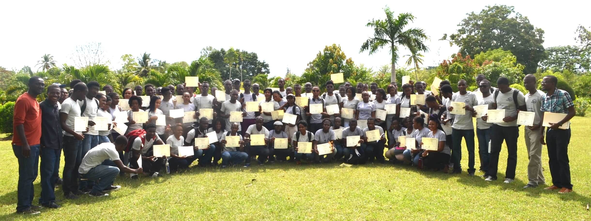

  <div class="hero__overlay"></div>

  <div class="hero__content">
    <div class="container">
      <p class="hero__kicker">NOS OBJECTIFS</p>

      <h1>DÉPARTEMENT D’ÉDUCATION</h1>

      <p class="hero__lead">
        Nous rendons la science accessible au public : écologie, botanique et santé basée sur les plantes.
        Nous créons des expériences simples, pratiques et inspirantes pour apprendre à mieux comprendre la nature — et à mieux la protéger.
        Notre priorité : les enfants, pour nourrir la curiosité, la créativité et l’espoir.
      </p>

      <div class="hero__actions">
        <a class="btn" href="#contact-education">CONTACTER</a>
        <a class="btn-outline" href="#education-projets">VOIR LES PROJETS</a>
      </div>
    </div>
  </div>
</header>

<main>

  <div class="container" style="padding-top:24px;">
    <a class="btn-outline" href="index.html"><i class="fa-solid fa-arrow-left"></i> Accueil</a>
  </div>

  <section class="section">
    <div class="container">
      <div class="intro">
        <h2 class="section-title" style="text-align:center;">NOTRE MISSION : APPRENDRE PAR LA NATURE</h2>

        <p class="lead">
          Le Département d’Éducation du Jardin Botanique des Cayes traduit les connaissances issues de la recherche et du terrain en apprentissages accessibles.
          Nous construisons des programmes qui permettent de comprendre les plantes, les écosystèmes et leurs liens directs avec la santé, l’alimentation,
          la résilience climatique et la conservation.
        </p>

        <p class="lead">
          Nos activités donnent au public des repères concrets : observer, identifier, comprendre et agir.
          À travers des ateliers et des sorties, les participants développent des compétences pratiques et une culture scientifique utile à la vie quotidienne,
          aux métiers de l’environnement et aux décisions communautaires.
        </p>

        <p class="pillars-note">
          Nos actions s’organisent autour de trois piliers : programmes scolaires · programmes universitaires · formations & cours.
        </p>
      </div>
    </div>
  </section>

  <section class="section">
    <div class="container">
      <div class="section-head">
        <h2 class="section-title">1. PROGRAMMES SCOLAIRES</h2>
        <p class="section-subtitle">Donner envie d’apprendre : observation, exploration, pratique.</p>
      </div>

      <div class="cards-grid">
        <article class="card card--top-accent">
          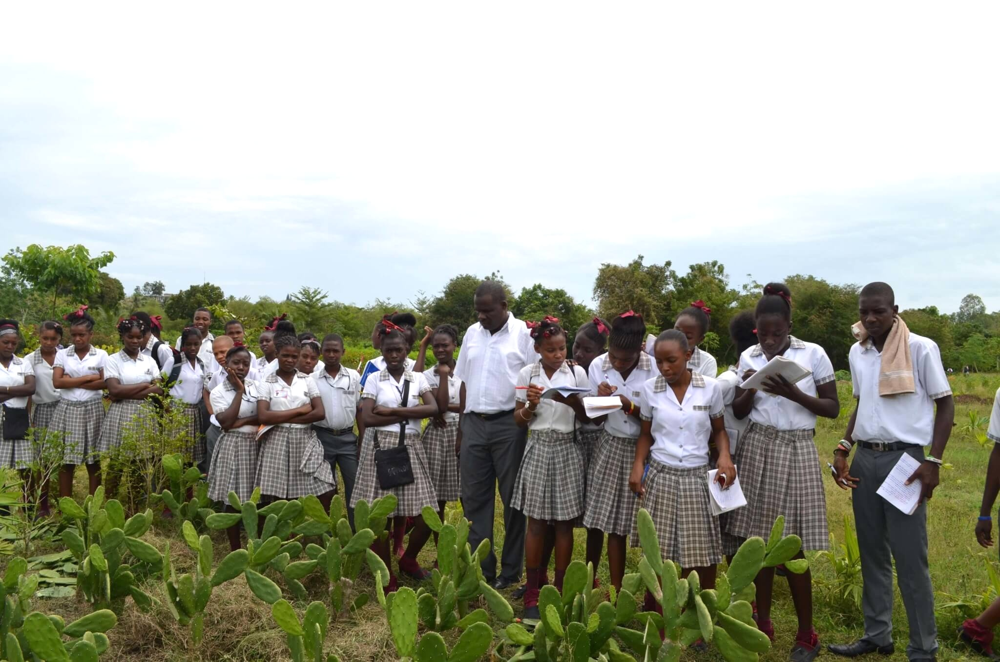
          <div class="card-body">
            <h3>Exploration au Jardin</h3>
            <p>Visites guidées et ateliers d’observation : biodiversité, formes, odeurs, usages et rôles des plantes.</p>
          </div>
        </article>

        <article class="card card--top-secondary">
          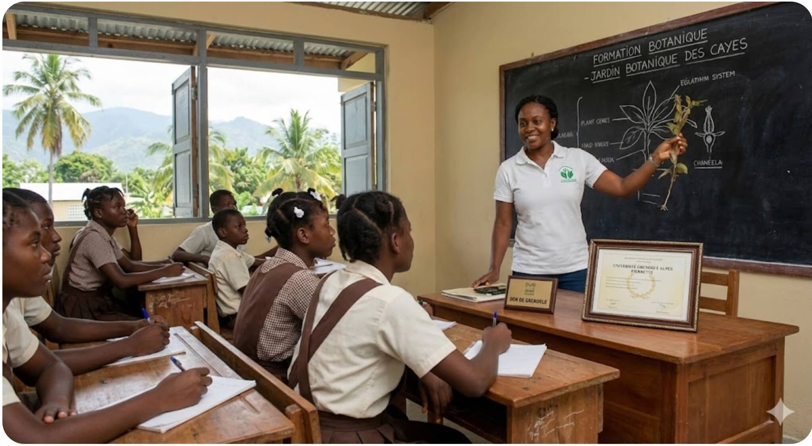
          <div class="card-body">
            <h3>Le Jardin à l’École</h3>
            <p>Interventions dans les écoles : activités éducatives, mini-ateliers et sensibilisation à la protection de la nature.</p>
          </div>
        </article>

        <article class="card card--top-primary">
          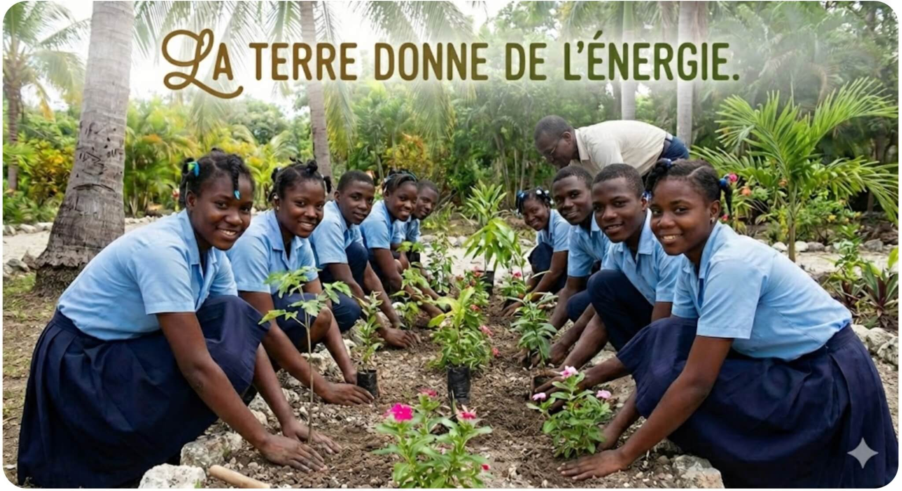
          <div class="card-body">
            <h3>Mains dans la Terre</h3>
            <p>Ateliers pratiques : comment planter, arroser, protéger un jeune plant et comprendre le rôle du sol.</p>
          </div>
        </article>
      </div>

      <div class="cta-center">
        <button class="btn" type="button"
          onclick="document.getElementById('contact-education').scrollIntoView({behavior:'smooth'})">
          PARTENARIAT SCOLAIRE
        </button>
      </div>
    </div>
  </section>

  <section class="section section--soft">
    <div class="container">
      <div class="section-head">
        <h2 class="section-title">2. PROGRAMMES UNIVERSITAIRES</h2>
        <p class="section-subtitle">Stages, cours spécialisés et apprentissage par le terrain.</p>
      </div>

      <div class="cards-grid cards-grid--wide">
        <article class="card">
          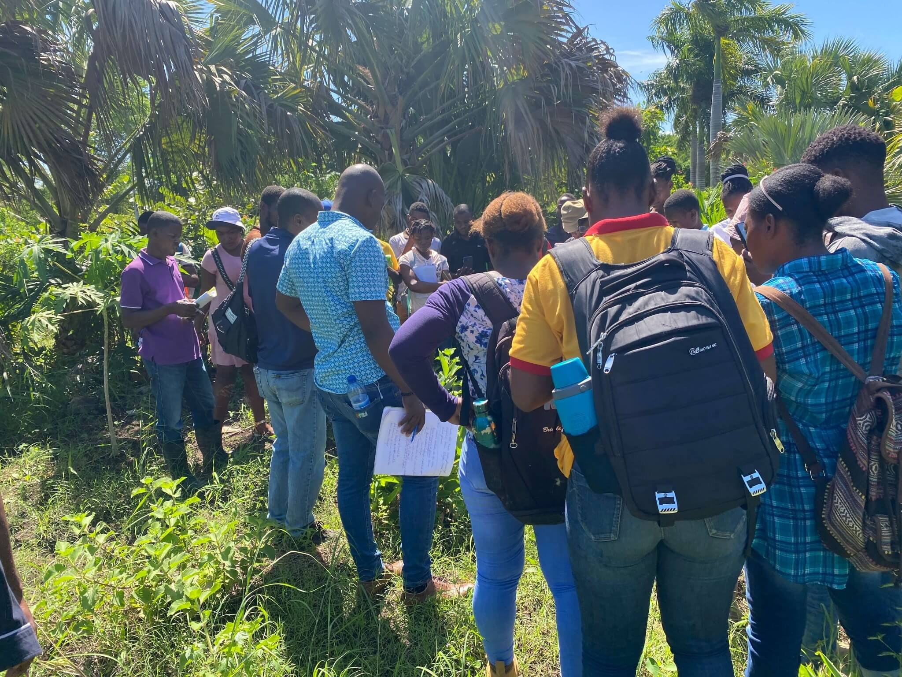
          <div class="card-body">
            <h3>Stages de formation</h3>
            <p>Stages sur le terrain : méthodes d’inventaire, photographie scientifique, collecte de données et travail sur collections.</p>
          </div>
        </article>

        <article class="card">
          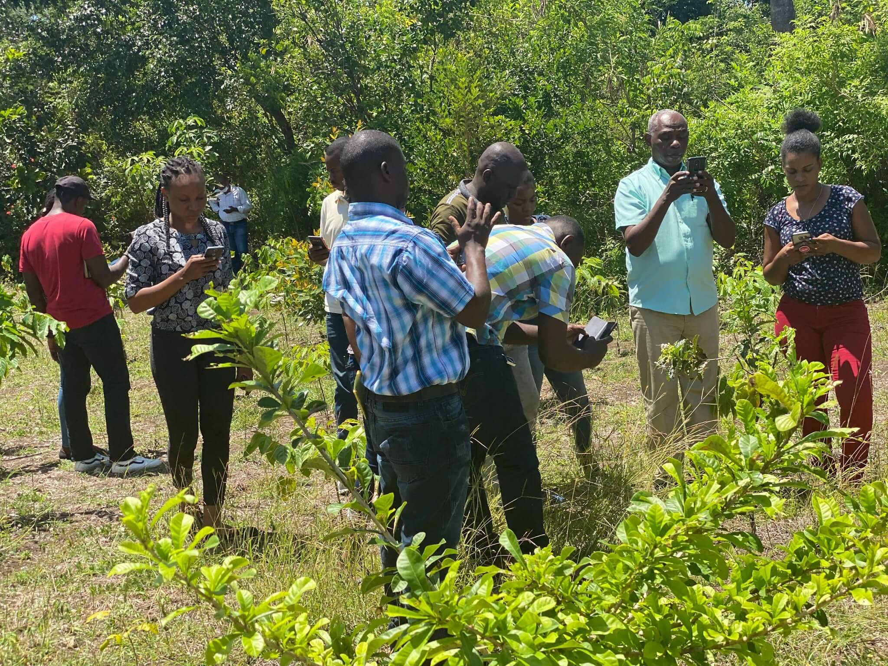
          <div class="card-body">
            <h3>Cours spécialisés</h3>
            <p>Cours appliqués : écologie, botanique, ethnobotanique, phytothérapie, naturopathie et autres thématiques liées à la biodiversité.</p>
          </div>
        </article>

        <article class="card">
          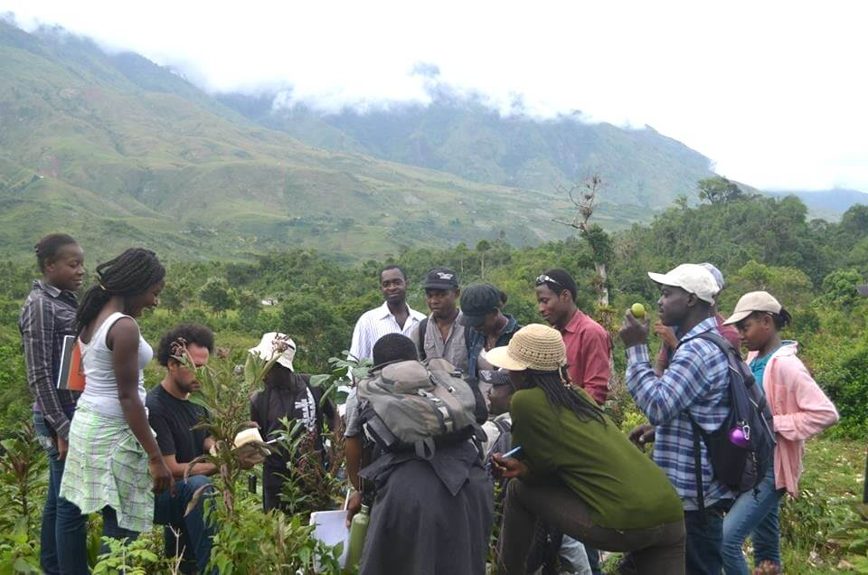
          <div class="card-body">
            <h3>Explorations & inventaires</h3>
            <p>Sorties d’étude et inventaires floristiques pour renforcer les compétences d’observation, d’identification et d’analyse.</p>
          </div>
        </article>
      </div>

      <div class="cta-center">
        <button class="btn" type="button"
          onclick="document.getElementById('contact-education').scrollIntoView({behavior:'smooth'})">
          COLLABORER AVEC UNE UNIVERSITÉ
        </button>
      </div>
    </div>
  </section>

  <section class="section">
    <div class="container">
      <div class="section-head">
        <h2 class="section-title">3. FORMATIONS & COURS</h2>
        <p class="section-subtitle">Pour les institutions, ONG, État et grand public.</p>
      </div>

      <div class="cards-grid">
        <article class="card card--left-secondary">
          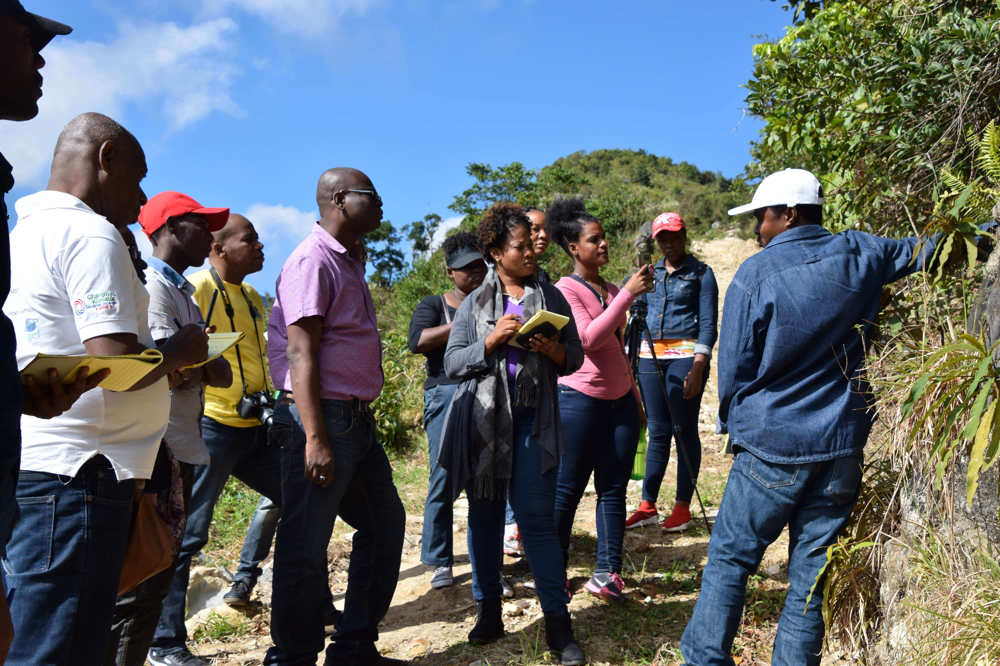
          <div class="card-body">
            <h3>Formations pour employés</h3>
            <p>Renforcement des capacités : outils, méthodes de terrain, contenus pédagogiques et bonnes pratiques d’organisation.</p>
          </div>
        </article>

        <article class="card card--left-accent">
          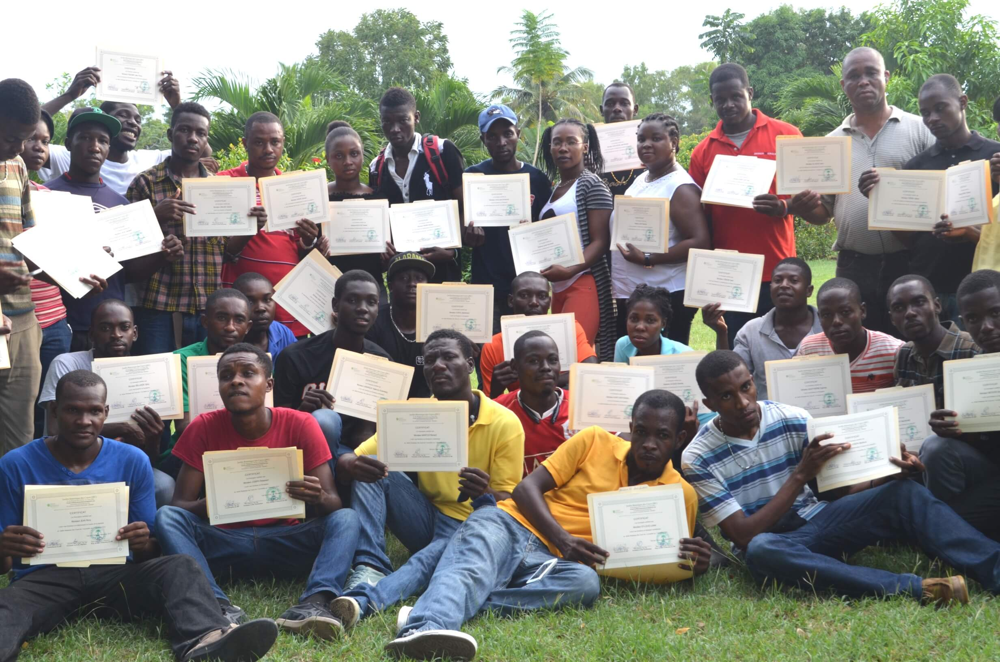
          <div class="card-body">
            <h3>Stages techniques</h3>
            <p>Stages ciblés pour apprendre par la pratique : pépinières, inventaires, collecte de données, propagation.</p>
          </div>
        </article>

        <article class="card card--left-primary">
          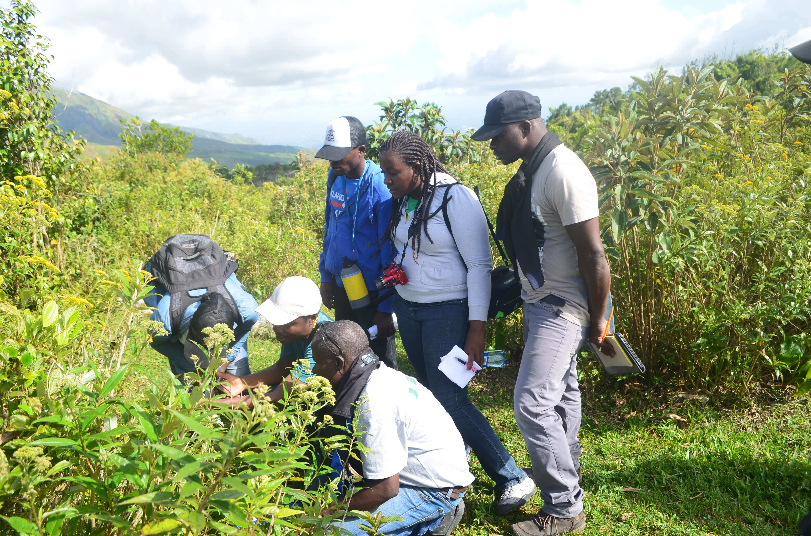
          <div class="card-body">
            <h3>Explorations & sorties</h3>
            <p>Sorties de terrain pour développer des compétences réelles : observation, identification, lecture des habitats et suivi.</p>
          </div>
        </article>
      </div>

      <div class="section-head" style="margin-top:50px;">
        <h2 class="section-title">COURS GRAND PUBLIC & CERTIFICATIONS</h2>
        <p class="section-subtitle">Santé · Nature · Techniques spécialisées.</p>
      </div>

      <div class="course-grid">
        <article class="card card--top-accent">
          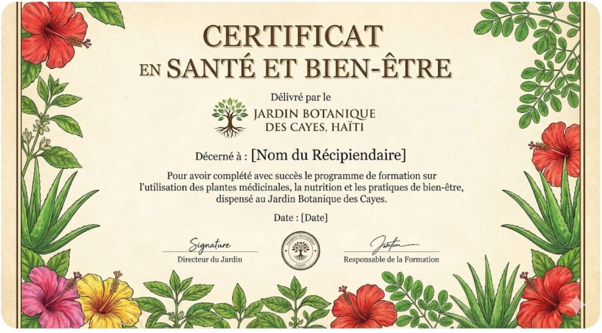
          <div class="card-body">
            <h3>Santé & Bien-être</h3>
            <ul>
              <li>Plantes médicinales : identification & usages</li>
              <li>Phytothérapie & naturopathie (approche pratique)</li>
              <li>Ethnobotanique : savoirs & références</li>
            </ul>
          </div>
        </article>

        <article class="card card--top-secondary">
          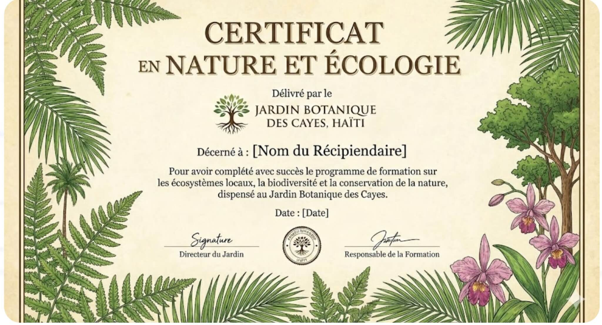
          <div class="card-body">
            <h3>Nature & Écologie</h3>
            <ul>
              <li>Écologie et botanique (bases solides)</li>
              <li>Évolution des plantes & écosystèmes</li>
              <li>Restauration et aménagement paysager</li>
            </ul>
          </div>
        </article>

        <article class="card card--top-primary">
          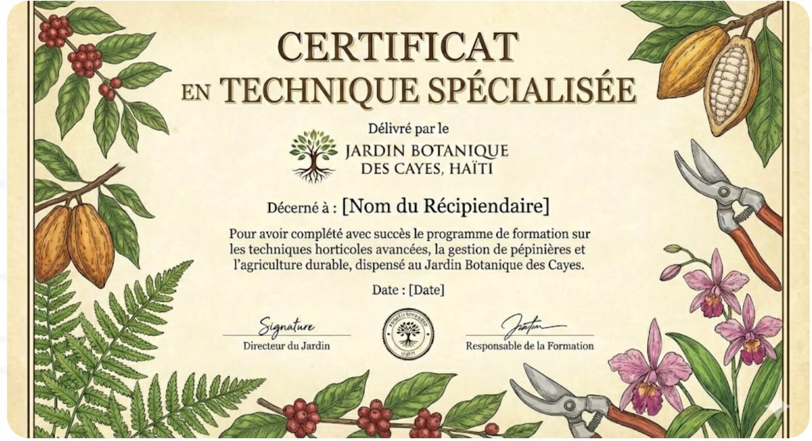
          <div class="card-body">
            <h3>Technique spécialisée</h3>
            <ul>
              <li>Pépinières : production de plants</li>
              <li>Inventaire et suivi de biodiversité</li>
              <li>Apiculture : élevage & production</li>
            </ul>
          </div>
        </article>
      </div>
    </div>
  </section>

  <section class="section section--soft" id="education-projets">
    <div class="container">
      <div class="section-head">
        <h2 class="section-title">PROJETS D’ÉDUCATION (PASSÉS · PRÉSENTS · FUTURS)</h2>
        <p class="section-subtitle">Une vue claire des actions du Département d’Éducation.</p>
      </div>

      <div class="tabs" role="tablist" aria-label="Projets par période">
        <button class="tab is-active" type="button" data-tab="past" role="tab" aria-selected="true">Passés</button>
        <button class="tab" type="button" data-tab="present" role="tab" aria-selected="false">Présents</button>
        <button class="tab" type="button" data-tab="future" role="tab" aria-selected="false">Futurs</button>
      </div>

      <div class="tab-panels">
        <div class="tab-panel is-active" data-panel="past" role="tabpanel">
          <div class="project-grid">
            <article class="project-card">
              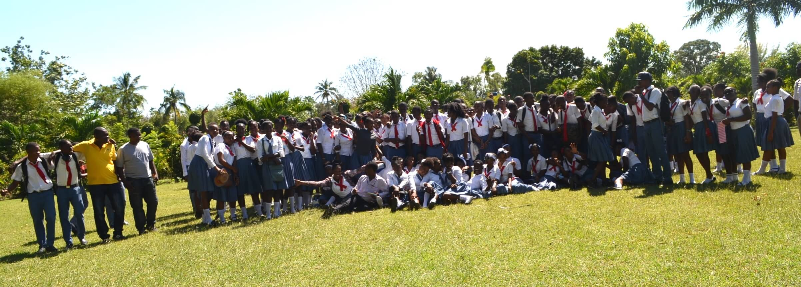
              <div class="project-body">
                <h3>Visites scolaires</h3>
                <p>Accueil de classes au jardin : découverte guidée, ateliers et sensibilisation à la biodiversité.</p>
              </div>
            </article>

            <article class="project-card">
              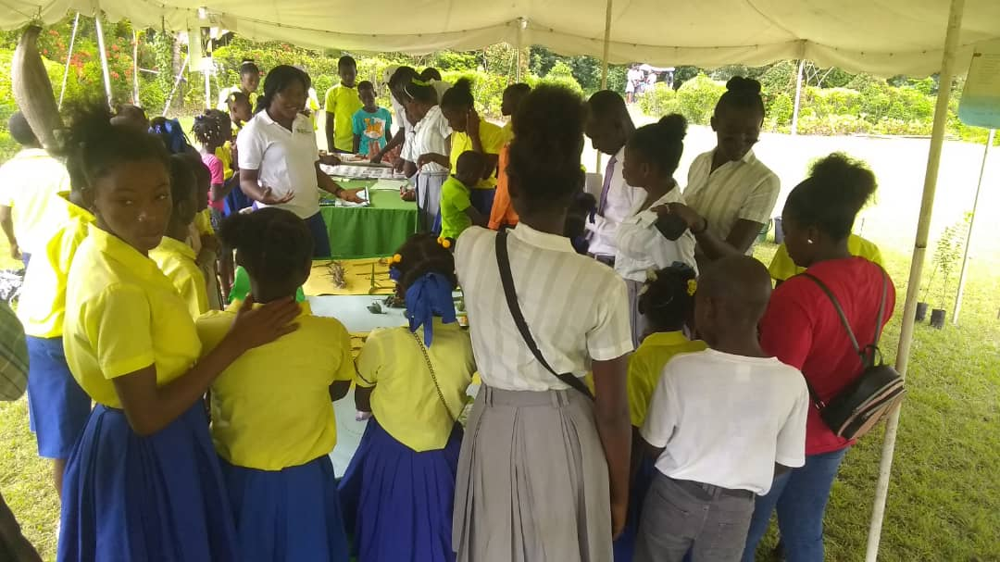
              <div class="project-body">
                <h3>Cours & ateliers</h3>
                <p>Ateliers thématiques : plantes, environnement, santé basée sur les plantes et pratiques de terrain.</p>
              </div>
            </article>

            <article class="project-card">
              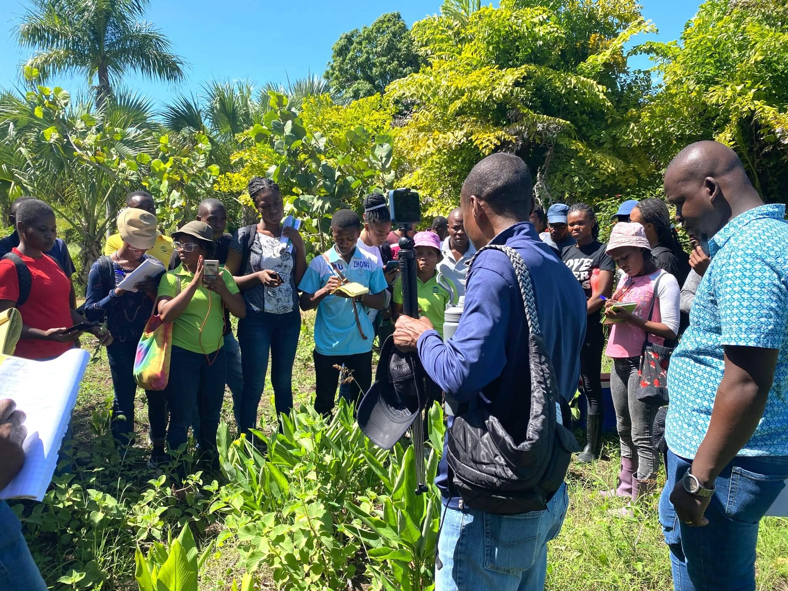
              <div class="project-body">
                <h3>Sensibilisation</h3>
                <p>Activités éducatives dans les écoles pour encourager le respect de la nature et des services écosystémiques.</p>
              </div>
            </article>
          </div>
        </div>

        <div class="tab-panel" data-panel="present" role="tabpanel" hidden>
          <div class="project-grid">
            <article class="project-card">
              
              <div class="project-body">
                <h3>Programme “Jardin scolaire”</h3>
                <p>Accompagnement d’écoles : mise en place de jardins, apprentissage et gestes simples de conservation.</p>
              </div>
            </article>

            <article class="project-card">
              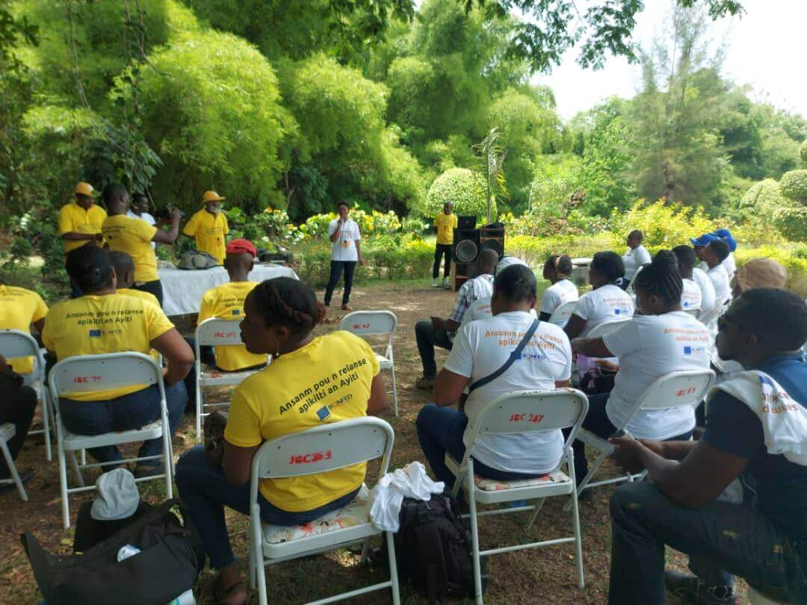
              <div class="project-body">
                <h3>Ateliers grand public</h3>
                <p>Cours accessibles : phytothérapie, écologie, botanique, avec exercices pratiques et supports pédagogiques.</p>
              </div>
            </article>

            <article class="project-card">
              
              <div class="project-body">
                <h3>Formations techniques</h3>
                <p>Inventaires, pépinières, apiculture et sorties de terrain pour institutions et équipes techniques.</p>
              </div>
            </article>
          </div>
        </div>

        <div class="tab-panel" data-panel="future" role="tabpanel" hidden>
          <div class="project-grid">
            <article class="project-card">
              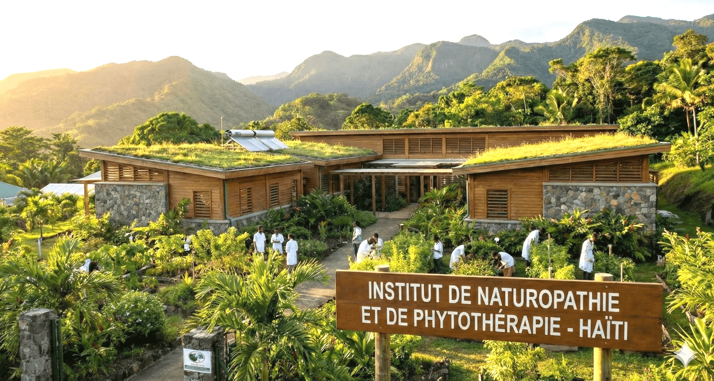
              <div class="project-body">
                <h3>École Nationale de Naturopathie et de Phytothérapie</h3>
                <p>Développer un programme national structuré, ancré dans la recherche, l’ethnobotanique et la conservation, afin de renforcer la santé et la valorisation durable de la biodiversité haïtienne.</p>
              </div>
            </article>

            <article class="project-card">
              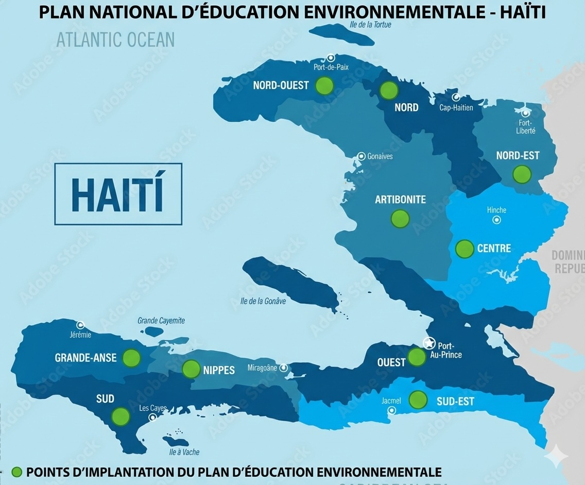
              <div class="project-body">
                <h3>Programme national d’éducation environnementale</h3>
                <p>Construire des partenariats pour déployer l’éducation environnementale à grande échelle, avec contenus et outils standardisés.</p>
              </div>
            </article>

            <article class="project-card">
              
              <div class="project-body">
                <h3>Plateforme Santé Nature</h3>
                <p>Plateforme de discussion et de rencontres entre botanistes, médecins, naturopathes, phytothérapeutes et écologistes.</p>
              </div>
            </article>
          </div>
        </div>
      </div>
    </div>
  </section>

  <section class="section" id="contact-education">
    <div class="container">
      <div class="contact-shell">
        <h2 class="contact-title">Connectez avec nous</h2>

        <p class="contact-subtitle">
          Connectez avec nous quand vous avez besoin d’avoir des données sur la phytothérapie, la naturopathie,
          les plantes endémiques, les plantes natives, et la biodiversité.
        </p>

        <form class="contact-form" name="contact-education" method="POST" data-netlify="true">
          <input type="hidden" name="form-name" value="contact-education">

          <div class="contact-grid">
            <div class="field">
              <label for="c-nom">Nom</label>
              <input id="c-nom" name="nom" type="text" placeholder="Votre nom" required>
            </div>

            <div class="field">
              <label for="c-email">Email</label>
              <input id="c-email" name="email" type="email" placeholder="Votre email" required>
            </div>

            <div class="field field-full">
              <label for="c-sujet">Sujet</label>
              <input id="c-sujet" name="sujet" type="text" placeholder="Objet du message" required>
            </div>

            <div class="field field-full">
              <label for="c-message">Message</label>
              <textarea id="c-message" name="message" placeholder="Écrivez votre message..." rows="7" required></textarea>
            </div>
          </div>

          <div class="contact-actions">
            <button class="contact-btn" type="submit">ENVOYER</button>
          </div>
        </form>
      </div>
    </div>
  </section>

</main>

<script>
  // Tabs Projets
  document.addEventListener('DOMContentLoaded', function () {
    const root = document.getElementById('education-projets');
    if (!root) return;

    const tabButtons = root.querySelectorAll('.tab');
    const panels = root.querySelectorAll('.tab-panel');
    if (!tabButtons.length || !panels.length) return;

    tabButtons.forEach((btn) => {
      btn.addEventListener('click', () => {
        const target = btn.getAttribute('data-tab');

        tabButtons.forEach(b => {
          b.classList.remove('is-active');
          b.setAttribute('aria-selected', 'false');
        });
        btn.classList.add('is-active');
        btn.setAttribute('aria-selected', 'true');

        panels.forEach(p => {
          const isTarget = p.getAttribute('data-panel') === target;
          p.hidden = !isTarget;
        });
      });
    });
  });
</script>


